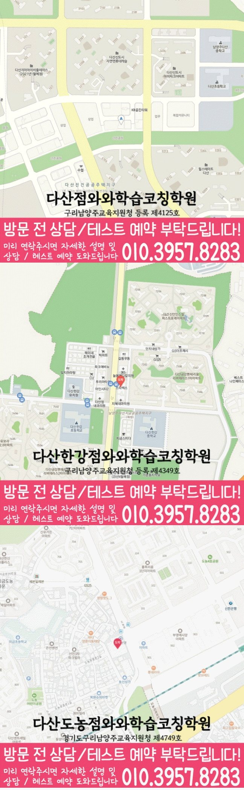

다산신도시 상담에서는 개념 이해, 유형 적용, 계산 정확도, 오답 재풀이가 실제 문제 풀이와 시험 준비로 이어지는지 확인합니다.
☁️ 경기 남양주시 다산신도시 수학·영어 학습관리
다산신도시 수학영어학원 상담 준비
다산신도시에서 안내하는 지점은 다산점입니다. 수학과 영어 과제가 겹칠 때 일주일의 공부 순서와 복습 시간을 정리하는 안내입니다. 실제 학원 시간표와 구분해 학생의 기록으로 활용하세요.
경기
남양주시
수학·영어 집중
초등·중등·고등
다산신도시에서 확인할 다산점 수강·위치 정보
수학의 최근 오답 한 문제에서 조건 표시와 식을 세운 이유를 먼저 설명해 보세요. 그 뒤 영어의 어휘·독해 기록을 함께 보며 수학 보완에 필요한 시간과 영어 복습 시간을 나누어 질문하세요.
- 주소
- 경기 남양주시 다산중앙로146번길 12-14 다산메트로타워 604호
- 시작 시간 참고
- 평일 오후 3시 이후
- 주말 안내
- 주말 정규 수업은 운영하지 않습니다.
| 과목 | 안내 학년 | 학년별 수강 안내 |
|---|---|---|
| 수학 | 초등·중등 안내: 초4~중3 | 초등 수학 학년 확인중등 수학 학년 확인고등 수학 안내 · 별도 주소 |
| 영어 | 초4~고2 | 초등 영어 안내중등 영어 안내고등 영어 안내 |
| 국어 | 초4~고2 | 국어 안내 학년 확인 |
| 과학 | 개설 학년 문의 | 과학 안내 학년 확인 |
| 사회 | 초4~고2 | 사회 안내 학년 확인 |
안내 학년과 현재 모집 가능 여부는 구분해서 확인하세요. 실제 요일·시작과 종료 시각·교재·수업 횟수·비용은 희망 과목과 학년을 정해 상담에서 확인할 수 있습니다.
고등 수학 안내는 학습코칭과 W+ 프로그램의 장소·과정이 다를 수 있습니다. 연결된 수강 안내에서 주소와 과정 구분을 확인하세요.
수학 과정 중 별도 장소 안내: 더블유플러스 다산점 — 경기 남양주시 다산순환로 350 KB골든타워 310호 더블유플러스학원. 해당 과정의 수강 안내에서 주소와 학년을 확인하세요.
홈페이지 상담 연락처: 010-6839-8283. 방문 전에는 이 페이지의 주소와 희망 과목·학년을 함께 확인해 주세요.

이미지를 누르면 확대할 수 있습니다. 원본 크기로 전환해 작은 글씨와 전체 내용을 읽어 보세요.

이미지를 누르면 확대할 수 있습니다. 원본 크기로 전환해 작은 글씨와 전체 내용을 읽어 보세요.
찾아오시는 길
와와학습코칭센터 다산점의 위치와 주변 교통편을 확인하세요.
- 주소
- 경기 남양주시 다산중앙로146번길 12-14 다산메트로타워 604호
교통편 확인 . 버스 운행과 정차 위치는 이용 전에 확인해 주세요.
Math & English Guide
다산신도시 수학영어학원, 수학을 먼저 잡고 영어를 함께 관리해야 흐름이 보입니다.
다산신도시에서 수학영어학원을 찾는 학부모님은 보통 “수학이 먼저인지, 영어도 함께 봐야 하는지”, “두 과목을 함께 관리해도 되는지”를 고민합니다. 실제로는 과목을 나누기 전에 아이가 공부를 실행하는 방식부터 살펴보는 것이 중요합니다.
수학은 개념을 배운 뒤 문제에 적용하는 힘이 중요하고, 영어는 어휘·문법·독해가 누적되어야 학교 시험에서 흔들리지 않습니다. 특히 오답노트를 작성해도 일정 기간 뒤 재풀이가 이어지지 않는 경우라면 진도보다 막힌 단계와 완료 기준을 먼저 구분해야 합니다. 다산신도시 수학영어학원 상담에서는 수학의 개념 공백과 오답 원인을 먼저 확인한 뒤 영어의 누적 학습 상태를 함께 점검합니다.
다산초, 다산중, 다산고, 도농고 주변 학교의 진도와 시험 준비 흐름을 상담 때 함께 확인합니다.
다산신도시 학생의 어휘 누적, 문법 정리, 독해 흐름, 학교 본문 복습 흐름이 끊기지 않도록 주간 계획 안에서 함께 조정합니다.
다산신도시 학생의 시험 기간에는 수학과 영어의 공부량이 한쪽으로 쏠리지 않도록 주간 계획을 조정합니다.
Grade Coaching
다산신도시 학년별 상담 자료와 공부 점검 기준
같은 수학영어 수업이라도 초등·중등·고등 단계에 따라 목표가 달라집니다. 현재 학년과 학교 진도, 최근 학습 기록을 함께 보아야 실제 관리 순서를 정할 수 있습니다.
초등 단계에서는 개념 이해, 유형 적용, 계산 정확도, 오답 재풀이를 확인하고, 어휘 누적, 문법 정리, 독해 흐름, 학교 본문 복습 흐름이 매일 이어지도록 작은 루틴을 만듭니다. 공부 습관이 잡히는 시기라 짧고 꾸준한 관리가 중요합니다.
학교 시험 범위에 맞춰 수학의 취약 단원과 영어의 누적 과제를 함께 관리합니다. 내신 대비는 시험 직전이 아니라 평소 누적 관리가 핵심입니다.
수학의 점수 변동 원인과 영어의 누적 학습 흐름을 함께 확인합니다. 과목별 우선순위를 잡아 시험 기간 계획이 흔들리지 않게 돕습니다.
Recommended
다산신도시에서 이런 학생이라면 수학영어 상담을 권합니다.
수학 개념은 알지만 문제 적용이 약한 학생다산신도시 상담에서는 개념 설명 후 바로 유형으로 연결되는지, 오답 원인을 스스로 말할 수 있는지 점검합니다.
영어 공부도 미루다 시험 직전에 몰리는 학생다산신도시 학생의 기록을 기준으로 단어·문법·독해 복습이 주간 계획 안에서 꾸준히 이어지는지 확인합니다.
학습 기록과 실제 실행이 어긋나는 학생오답노트를 작성해도 일정 기간 뒤 재풀이가 이어지지 않는 경우라면 공부 시간을 늘리기 전에 막힌 단계와 완료 기준부터 다시 정리할 필요가 있습니다.
수학·영어 주간 계획
일주일 과제와 복습 시간을 기록하는 방법
| 기록 항목 | 수학 | 영어 |
|---|---|---|
| 이번 과제 | 교재·단원·문제 범위와 제출일을 적습니다. | 학교 본문·어휘·문장 과제의 범위와 제출일을 적습니다. |
| 먼저 필요한 공부 | 문제를 풀기 전에 필요한 정의·공식·기본 예제를 표시합니다. | 지문을 읽기 전에 확인할 어휘·문장 구조를 표시합니다. |
| 실제 걸린 시간 | 풀기·질문·재풀이 시간을 구분해 남깁니다. | 읽기·외우기·써 보기·재확인 시간을 구분합니다. |
| 다음 복습 | 틀린 풀이를 가리고 다시 풀 날짜를 정합니다. | 뜻이나 해석을 가린 상태에서 다시 떠올릴 날짜를 정합니다. |
예를 들어 수학 한 묶음을 예상 시간 안에 끝내지 못했다면, 영어 복습 시간을 자동으로 없애기보다 남은 수학 과제를 질문할 문제와 혼자 이어 풀 문제로 나눠 보세요. 이 예시는 시간 조정 방법이며 지점 운영 시간표가 아닙니다.
상담 뒤 확인
다산신도시 상담 내용을 다음 공부에 연결하기
완료 표시는 읽었다는 뜻인지, 도움 없이 다시 풀었다는 뜻인지 정해 두세요. 계획보다 오래 걸린 과목은 분량·선행 개념·질문 대기 시간을 나누어 다음 주 조정 항목을 고릅니다.
학교 자료는 재학 학교에서 받은 시험 범위·진도표·교재를 준비하세요. 학교 이름만으로 별도 반이나 특정 출제 방식이 운영된다고 판단하지 않습니다.
Target Schools
다산신도시 주변 학교 자료를 상담에 활용하는 방법
다산신도시 주변 학생들이 상담 전 확인하기 쉽도록, 현재 정리된 학교 목록을 학년 단계별로 나누어 담았습니다.
다산초
다산중
다산고
도농고
학교별 교과 진도, 시험 범위, 수행평가 준비 상황은 학생마다 다르기 때문에 상담 시 현재 교재와 최근 평가지를 함께 확인하면 더 정확한 학습 계획을 세울 수 있습니다.
학교 목록은 상담 준비를 위한 지역 참고 정보입니다. 특정 학교와의 제휴나 별도 반 개설을 의미하지 않습니다. 학생이 학교에서 받은 실제 진도표·평가 안내·사용 교재를 가져와 수업에서 확인할 범위와 집에서 복습할 범위를 나누어 질문하세요.
Checklist
다산신도시 수학영어학원 상담 전 체크리스트
다산신도시 수학영어학원 수학 확인 자료: 현재 교재, 최근 시험지, 반복해서 막히는 단원
다산신도시 영어 확인 자료: 과제 기록, 오답 재풀이 여부, 다음 진도 준비 상태
학교별 확인 자료: 다산초·다산중과 학생이 가져온 실제 진도표·시험 범위
오답노트를 작성해도 일정 기간 뒤 재풀이가 이어지지 않는 경우에 해당하는지 보여주는 플래너와 최근 실행 기록
FAQ
다산신도시 수학영어학원 자주 묻는 질문
다산신도시 학생이 수학·영어 상담 전에 준비할 자료는 무엇인가요?
최근 시험지와 현재 교재, 학교 진도표, 오답노트 또는 자주 틀리는 문제를 준비하면 좋습니다. 자료가 모두 없어도 상담은 가능하며, 확인 가능한 내용부터 수학과 영어의 시작 순서를 정리합니다.
다산신도시 수학영어학원은 어떤 학생에게 도움이 될 수 있나요?
수학과 영어 공부를 시작하지만 과제·복습·오답 확인이 서로 이어지지 않거나, 한 과목의 부담 때문에 다른 과목 계획까지 자주 밀리는 학생이라면 상담에서 현재 실행 흐름을 점검해볼 수 있습니다.
다산신도시 수학영어학원 상담은 어떤 순서로 진행되나요?
먼저 현재 교재와 학교 진도, 최근 시험지, 반복 오답을 확인합니다. 그다음 수학과 영어에서 혼자 해결되는 부분과 설명이 필요한 부분을 나누고, 학생이 실제로 실행할 수 있는 학습 순서를 안내합니다.
다산신도시 수학영어학원을 알아볼 때 진도가 빠른 수업이 항상 좋은가요?
진도 속도보다 배운 내용을 학생이 혼자 설명하고 문제에 적용하며, 틀린 문제를 다시 풀 수 있는지가 더 중요한 확인 기준입니다. 다산신도시 수학영어학원의 실제 적용 범위는 학생의 학년과 현재 학교 진도, 상담 시 확인한 자료에 따라 달라질 수 있습니다.
다산신도시 수학영어학원에서 상담 전에 어떤 자료를 준비하면 좋나요?
최근 시험지, 현재 교재, 학교 진도표, 반복해서 틀린 문제처럼 학생의 현재 상태를 보여주는 자료부터 준비하면 됩니다. 자료가 모두 없어도 확인 가능한 기록부터 상담할 수 있습니다. 다산신도시 수학영어학원의 실제 적용 범위는 학생의 학년과 현재 학교 진도, 상담 시 확인한 자료에 따라 달라질 수 있습니다.
상담 참고
다산신도시 상담 시 확인할 수학영어 학습 변화
다산신도시 수학영어학원 안내는 성적 결과를 미리 약속하지 않습니다. 질문 빈도, 과제 착수, 오답 재풀이처럼 관찰 가능한 학습 행동을 상담에서 확인합니다.
시험 범위와 남은 기간을 기준으로 수학과 영어의 점검 순서를 나누면 한쪽 과목에 계획이 쏠리는 것을 줄일 수 있습니다.
다산신도시 수학영어학원 상담에서는 틀린 문제를 개념 공백, 적용 순서, 계산·표현 실수로 나누어 기록해 같은 실수가 반복되는 이유를 확인합니다.
다른 지역 안내
다산신도시 주변 수학영어학원도 함께 보기
같은 시군구와 가까운 지역의 수학영어 상담 페이지로 자연스럽게 이동할 수 있게 정리했습니다.
Page Route
다산신도시 페이지 이동
현재 페이지와 연결된 상위 페이지를 빠르게 확인할 수 있습니다.
다산점 학습 공간 참고 사진

공용 학습 공간 참고 사진으로, 다산점의 실제 시설 사진은 아닙니다.